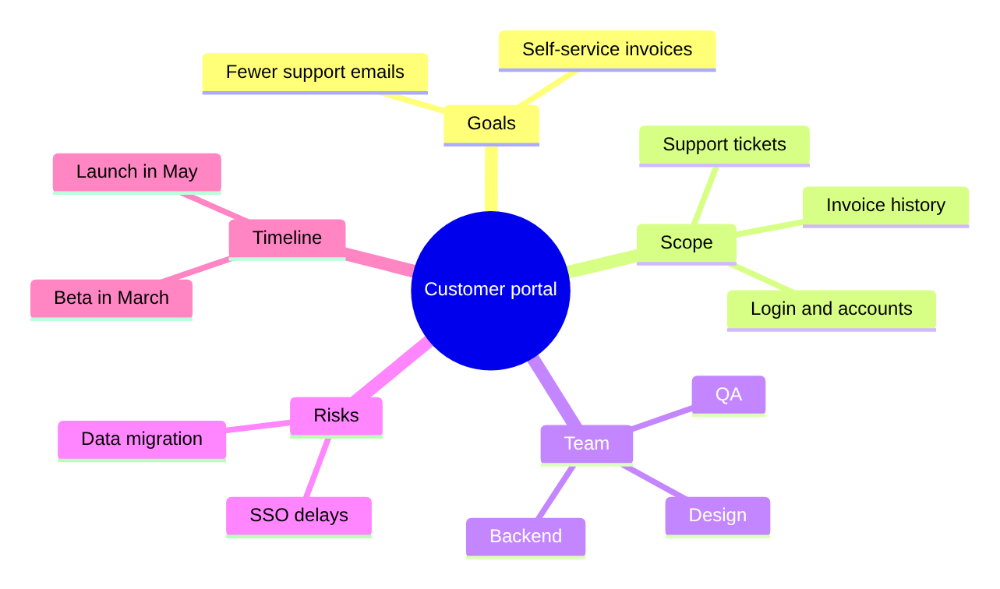

Guide · Confluence Cloud
Mind map in Confluence Cloud (free, with Mermaid)
Confluence Cloud does not draw Mermaid on its own. Paste a Mermaid mindmap block into a page and it stays a code block: readers see an indented list, not a mind map. A Mermaid app draws it. With Mermaid Editor for Confluence, a free app on the Atlassian Marketplace, you type the topics as an indented list and the mind map draws next to it while you type. Below: the steps, a project mind map to copy, how the syntax works, and the mistakes that put a branch in the wrong place.
What Confluence Cloud does with Mermaid on its own
Confluence Cloud does not draw Mermaid itself. In our tests in October and November 2026, a ```mermaid block pasted into a page became an ordinary code block: readers see an indented list, not the mind map. The code is kept safely, but nothing is drawn.
To see the mind map you need a Mermaid app that adds a macro to the editor, or you draw the diagram elsewhere and upload a picture. How to add Mermaid diagrams to Confluence Cloud compares those routes.
How to add a mind map with Mermaid Editor for Confluence
Full disclosure: Dortus makes this app. The steps:
- A Confluence admin installs Mermaid Editor for Confluence from the Atlassian Marketplace. The app is free.
- Open the page in edit mode. Type
/mermaidand choose Mermaid Editor. You can also open the + insert menu in the toolbar and search for Mermaid Editor. - The editor opens with the code on the left and a live preview on the right. Click the Mindmap example to start from a short launch mind map, or paste the example from this page. If you paste a block that starts with
```mermaid, the fences are removed for you. - Change the text. The preview redraws as you type. If a line is wrong, the preview says what is wrong and names the line, and that line is marked in the code.
- Click Insert diagram, or press Ctrl+Enter (Cmd+Enter on a Mac). Publish the page.
- To change it later, select the diagram in the editor and click the pencil icon. Versions in the editor brings back any of the last 20 saves.
On the page the diagram fits the width of the page. Hover over it, or tab to it, for the zoom buttons. Click it, or use Open large, to see it in a big window. SVG and PNG download the diagram for a slide or an email. In Confluence’s dark mode the diagram is drawn in Mermaid’s dark colours. The app has 12 examples to start from: flowchart, sequence, class, state, Gantt, pie, mindmap, timeline, journey, ER, architecture and kanban.
Where it lives: the app runs on Atlassian Forge. The Mermaid code is saved in the macro on the page, earlier versions in Forge storage in your own Atlassian site, and the diagram is drawn in the browser of the person reading the page.
Example: a project mind map
A mind map for a customer portal project: goals, scope, team, risks and timeline around one centre. Copy it and replace the topics with your own.
mindmap
root((Customer portal))
Goals
Fewer support emails
Self-service invoices
Scope
Login and accounts
Invoice history
Support tickets
Team
Design
Backend
QA
Risks
SSO delays
Data migration
Timeline
Beta in March
Launch in May
Drawn with Mermaid 12.2, the version the app uses. Mermaid picks the layout and a colour per branch.
How the syntax works
mindmapon the first line names the diagram type.- The next line is the centre, the root. There is only one.
- Indentation sets the level. A line belongs to the nearest line above it that is indented less.
Goalsis indented more than the root, so it is a branch of the root;Fewer support emailsis indented more thanGoals, so it hangs under Goals. root((Customer portal))gives the node an id,root, and draws the text in a circle. Other shapes:id[text]square,id(text)rounded,id))text((bang,id)text(cloud,id{{text}}hexagon. Text without brackets gets the default shape.- Mermaid places the branches around the centre itself. You decide the order of the lines, not where they end up.
Let an AI assistant write the first version. ChatGPT and Claude can write Mermaid. Describe the topic and your notes in plain words, ask for a Mermaid mindmap with one root and at most three levels, and paste the answer into the editor. Read the result: assistants sometimes invent a topic or use syntax that does not draw.
Common mistakes and how to fix them
- Two lines at the top level. A mind map has one centre. If two lines have the lowest indentation, the diagram stops with “There can be only one root”. Fix: keep one centre line and indent everything else under it.
- Tabs and spaces mixed. Mermaid counts the characters of indentation, so a tab and spaces that look the same in one editor can mean a different level. In our test a topic meant as a branch of the root ended up under the branch above it, without an error. Fix: indent with spaces only, two per level.
- Brackets in the text.
Login (SSO)is read as a node calledLoginwith a rounded shape and the text “SSO”. In our test only “SSO” was shown. The same happens with square brackets. Fix: give the node an id and put the text in quotes:login["Login (SSO)"]. - The wrong spelling of the first line. Diagram types are case sensitive.
mindMaporMindmapgives “Unknown diagram type” in the editor. Fix:mindmap, all lower case.
Other ways
Other Mermaid apps exist on the Atlassian Marketplace; the Mermaid guide lists points worth comparing. For a mind map you build live in a workshop by dragging notes around, a Confluence whiteboard or a drawing app such as draw.io fits better.
FAQ
Can I make a mind map in Confluence Cloud without an app?
You can draw one by hand on a Confluence whiteboard with shapes and connectors. As text, no: in our tests a pasted Mermaid mindmap block stayed a code block. A Mermaid app such as Mermaid Editor for Confluence draws it on the page.
How do I add a branch to a Mermaid mind map?
Add a line under the topic it belongs to, indented two spaces more than that topic. Indent it the same as the other topics at that level.
Can I change the shape of a node?
Yes. Give the node an id and put the text in brackets: id[text] for a square, id(text) for rounded, id((text)) for a circle, id{{text}} for a hexagon, id)text( for a cloud and id))text(( for a bang.
Can ChatGPT or Claude turn my notes into a mind map?
Yes. Paste your notes and ask for a Mermaid mindmap with one root and at most three levels. Paste the answer into the editor and check that every topic is under the right branch.
When should I use a flowchart instead of a mind map?
Use a mind map for topics around one idea, where the order does not matter. Use a flowchart when steps follow each other or when there are decisions with yes and no.
By diagram type
A mind map shows topics around one idea. Mermaid diagram examples for Confluence has a short example of each of twelve diagram types. Guides that go deeper on one type:
- Gantt charts in Confluence Cloud
- Sequence diagrams in Confluence Cloud
- ER diagrams (entity relationship) in Confluence Cloud
- Flowcharts in Confluence Cloud
Questions
An example that does not draw for you, or a mistake we missed? Email support@dortus.com.
Mermaid Editor for Confluence by Dortus
Type the diagram, watch it draw
A Confluence macro with Mermaid code on the left and a live preview on the right. The code stays in the page, so the diagram stays editable. Runs on Atlassian Forge.
See also: How to add Mermaid diagrams to Confluence Cloud (including diagrams from ChatGPT or Claude)